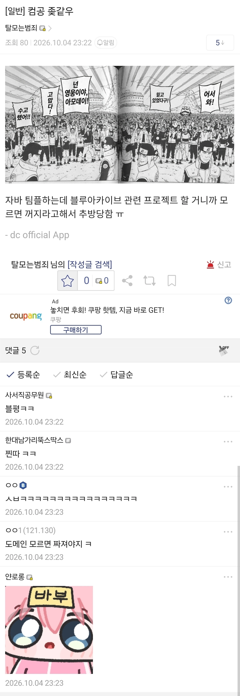

39 · 31 · 9 시간 전 · 원문

수집 당시 댓글 31개
유아학교 · 10 시간 전
난틀렸어먼저가 · 10 시간 전
Montmartre · 10 시간 전
야니네코 · 10 시간 전
포도피플 · 10 시간 전
비씹덕 컴공이라니 처녀 비치를 보는 기분이군
악질틀딱히틀딱 · 10 시간 전
이오리 · 10 시간 전
몬스터에너지 · 10 시간 전
근데 컴하하도 도메인 지식 중요하긴 함ㅋㅋㅋ
↳ 답글 · 유메노아이카찹살젖통 · 9 시간 전
도매인지식이머임
↳ 답글 · 몬스터에너지 · 8 시간 전
예를 들어 은행 개발자라면 금융에 대한 지식이 도메인 지식이 되는 거지
↳ 답글 · 행정법노트 · 8 시간 전
컴하하들의 용어임. 웹사이트 주소를 도메인 주소라 하잖아. 그거랑 비슷한 개념으로, 해당 업계의 고유 지식을 말하는거임.
↳ 답글 · 6Soo · 3 분 전
도메인이 컴하하용어 ㅋㅋㅋㅋㅋ정의역도 domain인데수학도 컴하하들만 하는거라하겠네
↳ 답글 · 남양주시진접읍 · 1 시간 전
산업 = 도메인 ex) 건설업, 유통업
기여운걸조아하는사람 · 9 시간 전
스크립트돌리다밴당함 · 9 시간 전
java 로 게임관련 프로젝트를 할 수가 있나???
↳ 답글 · 프바이 · 9 시간 전
걍 대충 텍스트로 게임 흉내 같은데
↳ 답글 · 후레쉬베리딸기맛 · 9 시간 전
본격게임 개발이 아니라 학부수준에서 과제 수준이겠지머
↳ 답글 · RX7900XTX · 9 시간 전
마크가 자바잖음마소 넘어가면서 c++로 컨버팅 했나? 그럼
↳ 답글 · ひつじぶんがく · 9 시간 전
게임을 만드는게 아니라 게임관련이니까 ㅋㅋㅋ가능하지만약 블루아카이브 관련 웹사이트를 스프링부트로 만들어도 게임관련 프로젝트임
↳ 답글 · Regentag · 9 시간 전
가능하지. 마인크래프트도 자바였어.
↳ 답글 · 스크립트돌리다밴당함 · 9 시간 전
결국 최적화 때문에 cpp로 다시 만들었잖아
↳ 답글 · 전자회로 · 8 시간 전
베드락(c++)과 자바에디션은 별개임. 지속적으로 업데이트도 니오고있어서 아직 안죽음
파카사탕 · 9 시간 전
자바랑 자바스크립트는 같은거죠?
네 맞습니다 인도와 인도네시아처럼요!
코드싫어 · 9 시간 전
추방물 도입부로 딱이네 이거
IceOreo · 9 시간 전
록타이트 · 9 시간 전
...저런.
elysia · 9 시간 전
아모데이 씹창년을 불러라
서프라이즈마더풔커 · 9 시간 전
일반인들은 이 조에서 꺼지시지!
LTN · 9 시간 전
가모가모 · 4 시간 전
모르는 뉴비가 있다면 영업을 해야지. 라떼는 말이야...
댓글
수집 당시 댓글 31개
유아학교 · 10 시간 전
난틀렸어먼저가 · 10 시간 전
Montmartre · 10 시간 전
야니네코 · 10 시간 전
포도피플 · 10 시간 전
비씹덕 컴공이라니
처녀 비치를 보는 기분이군
악질틀딱히틀딱 · 10 시간 전
이오리 · 10 시간 전
몬스터에너지 · 10 시간 전
근데 컴하하도 도메인 지식 중요하긴 함ㅋㅋㅋ
· 유메노아이카찹살젖통 · 9 시간 전
도매인지식이머임
· 몬스터에너지 · 8 시간 전
예를 들어 은행 개발자라면 금융에 대한 지식이 도메인 지식이 되는 거지
· 행정법노트 · 8 시간 전
컴하하들의 용어임.
웹사이트 주소를 도메인 주소라 하잖아.
그거랑 비슷한 개념으로, 해당 업계의 고유 지식을 말하는거임.
· 6Soo · 3 분 전
도메인이 컴하하용어 ㅋㅋㅋㅋㅋ
정의역도 domain인데
수학도 컴하하들만 하는거라하겠네
· 남양주시진접읍 · 1 시간 전
산업 = 도메인
ex) 건설업, 유통업
기여운걸조아하는사람 · 9 시간 전
스크립트돌리다밴당함 · 9 시간 전
java 로 게임관련 프로젝트를 할 수가 있나???
· 프바이 · 9 시간 전
걍 대충 텍스트로 게임 흉내 같은데
· 후레쉬베리딸기맛 · 9 시간 전
본격게임 개발이 아니라 학부수준에서 과제 수준이겠지머
· RX7900XTX · 9 시간 전
마크가 자바잖음
마소 넘어가면서 c++로 컨버팅 했나? 그럼
· ひつじぶんがく · 9 시간 전
게임을 만드는게 아니라 게임관련이니까 ㅋㅋㅋ가능하지
만약 블루아카이브 관련 웹사이트를 스프링부트로 만들어도 게임관련 프로젝트임
· Regentag · 9 시간 전
가능하지. 마인크래프트도 자바였어.
· 스크립트돌리다밴당함 · 9 시간 전
결국 최적화 때문에 cpp로 다시 만들었잖아
· 전자회로 · 8 시간 전
베드락(c++)과 자바에디션은 별개임. 지속적으로 업데이트도 니오고있어서 아직 안죽음
파카사탕 · 9 시간 전
자바랑 자바스크립트는 같은거죠?
· RX7900XTX · 9 시간 전
네 맞습니다 인도와 인도네시아처럼요!
코드싫어 · 9 시간 전
추방물 도입부로 딱이네 이거
IceOreo · 9 시간 전
록타이트 · 9 시간 전
...저런.
elysia · 9 시간 전
아모데이 씹창년을 불러라
서프라이즈마더풔커 · 9 시간 전
일반인들은 이 조에서 꺼지시지!
LTN · 9 시간 전
가모가모 · 4 시간 전
모르는 뉴비가 있다면 영업을 해야지. 라떼는 말이야...